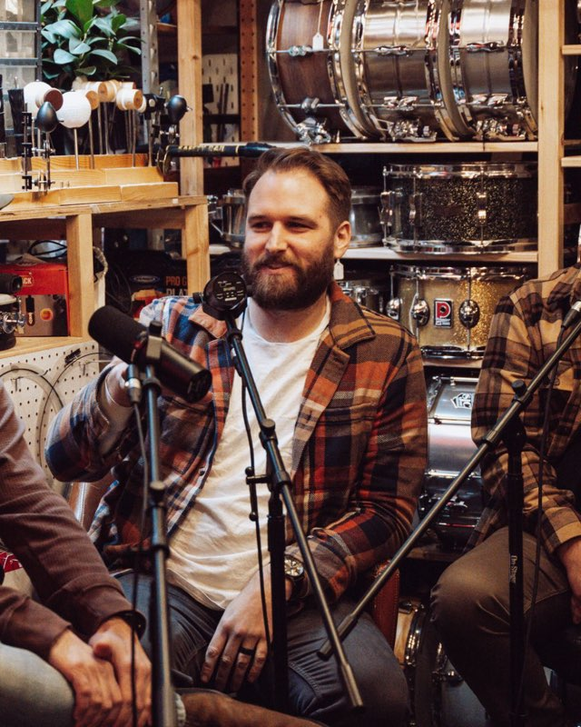

An interior designer for sound
Music for places people want to come back to.
I'm a working session musician. I figure out what your place is about, then choose real songs by real artists that make it feel that way, all day long.
Most places just play music. Yours should sound like someone decided.
What I actually do
An interior designer picks the chairs, the light and the wall color so a room feels a certain way. I do the same thing with what's coming out of your speakers.
You get a full day of music that fits your place at 8am and still fits it at 10pm. It leans toward artists from your own city, and every track was picked by ear. Not by an algorithm, and never AI-generated.
How it works
Four steps. You do the first one with me, and I handle the rest.
-
Listen
A listening session, in person or by video. I hear your room, your crowd and what you're going for.
-
Decide
A short written sound brief. Here's what I'd do, and here's why, with a reason for every choice.
-
Build
The music for your whole day, from open to close, set up to play on its own.
-
Refresh
A monthly update, so a regular never hears the same hour twice.
Every song has a reason
I teach music theory, so I can't help explaining myself. Your sound brief tells you why each part of the day sounds the way it does, in plain English.
-
7–10am
Disaster — Katie Pruitt, Nashville[Why: e.g. quiet enough to read to, nothing with a big chorus before the second coffee.]
-
12–2pm
I Love Cherry — Medium Build, Nashville[Why: tempo comes up with the lunch line.]
-
After 6pm
Sometimes Magic Happens! — Allison Young, Nashville[Why: warmer, lower, more room for conversation.]
What you can count on
Real artists, every track
No AI-generated music. A person made it, and a person chose it.
Local to you
I lean toward artists from wherever you are, so your room sounds like your town.
Never on repeat
It changes every month, so your regulars notice something new.

Who's picking
Hi, I'm Dan.
I've spent my career as a session drummer and percussionist — 200+ recording sessions, major-label records, 100M+ streams. I also teach music theory at Belmont University.
So I hear music the way a player does and explain it the way a teacher does. You'll always know what I'm doing and why.
Who it's for
Independent places with taste. The cafe, bar or shop where your effortlessly cool friends end up. Restaurants, hotels and shops that sweat the details, too.
If you've ever winced at your own playlist, you're who I'm talking to.
Questions
What do I need to play it?
Your music plays through Soundtrack Your Brand, which handles the licensing. They bill you directly for the player.
Is any of it AI-generated?
No. Every track is by a human artist.
Do I have to be in Nashville?
Not at all. I work with places anywhere in the US and lean toward artists from your city.
What does it cost?
Every place is different, so it starts with a conversation.
Let's listen to your room.
One session, no commitment. You'll leave knowing what I'd change.